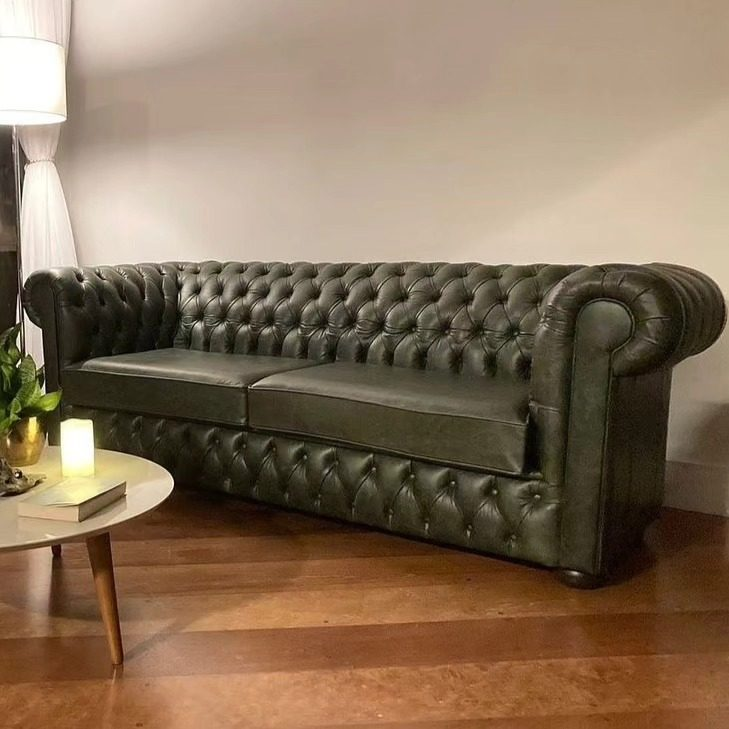

Serviço
Conserto de sofá em São Paulo
Conserto pontual ou estrutural do sofá — quando o problema é específico e a peça merece continuar.
O conserto de sofá em São Paulo na InovArt é para quando o problema é localizado: assento afundado, mola estourada, percinta frouxa, costura aberta, mecanismo travado ou um painel de tecido danificado — sem necessariamente refazer a peça inteira.
Após o diagnóstico, indicamos o caminho mais honesto: conserto pontual, reforço estrutural ou evolução para uma reforma completa quando o desgaste é generalizado. Assim você investe no que realmente resolve.
Sinais de que o sofá precisa de conserto
Inclinação irregular, ruídos, “buracos” no assento, braços folgados, rasgos localizados ou reclinável que não trava. Em sofás premium, o conserto bem feito restaura o uso sem perder a linha original.
Como funciona
- Diagnóstico — fotos e/ou visita técnica para isolar a falha.
- Escopo — o que será consertado versus o que recomenda-se reformar.
- Execução — reforço, troca de componentes e remate no ateliê.
- Validação — teste de conforto e mecanismo antes da entrega.
Perguntas frequentes
Conserto é a mesma coisa que reforma?
Não. O conserto corrige falhas pontuais; a reforma renova revestimento, espumas e acabamento de forma mais ampla. Orientamos a melhor opção após avaliar a peça.
Vocês consertam mecanismo de sofá retrátil?
Sim. Revisamos e ajustamos mecanismos quando a estrutura permite, com foco em segurança e uso diário.
Dá para consertar só um módulo do sofá?
Em muitos casos, sim — especialmente em sofás modulares. Avaliamos encaixe, tecido e estrutura para manter o conjunto coerente.
Como pedir orçamento de conserto?
Envie fotos dos pontos de falha pelo WhatsApp. Retornamos com indicação de conserto ou reforma e valores após avaliação.
Conte o desafio do seu projeto — do conserto pontual à peça sob encomenda. Envie fotos e receba orientação pelo WhatsApp.
Pedir orçamento no WhatsApp